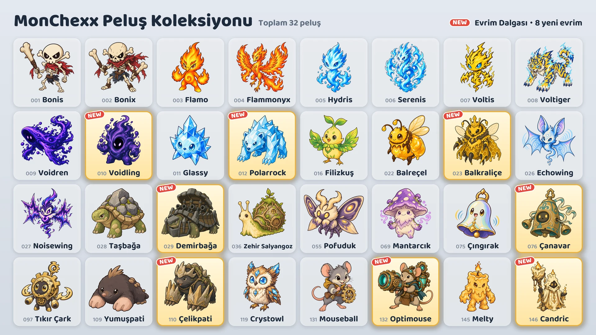

17 Ekim'de oyuna sekiz yeni evrim ekleniyor.

Sekiz yeni evrim
- Voidling: Voidren'in evrimi · Tank / Savaşçı
- Polarrock: Glassy'nin evrimi · Tank / Savaşçı
- Balkraliçe: Balreçel'in evrimi · Destek / Menzilli
- Demirbağa: Taşbağa'nın evrimi · Tank
- Çanavar: Çıngırak'ın evrimi · Tank
- Çelikpati: Yumuşpati'nin evrimi · Tank / Suikastçı
- Optimouse: Mouseball'un evrimi · Menzilli
- Candric: Melty'nin evrimi · Destek / Menzilli
Elde etme yolları
- Pençe makineleri (etkinlik): Etkinlik süresince (17–24 Ekim), sıranın iki ucundaki iki makine hariç her pençe makinesinde yeni evrimlerden biri, iki başka peluşla birlikte bulunur. Etkinlik bittikten sonra yeni evrimler de diğer tüm peluşlarla aynı oranda makinelere konur.
- Peluş Takası: 10 yedek peluş karşılığında seçilen bir peluş (Seçerek Takas), 3 yedek peluş karşılığında ise rastgele bir peluş (Rastgele Takas) alınabilir.
- Peluş paketleri: Yeni evrimler peluş paketlerinden de çıkabilir.
Evrimleşmiş peluşları kullanma
- Evrimleşmiş peluşlar ayrı olarak toplanır ve elde edildikleri anda takıma eklenebilir.
- “Takımını Kur” ekranında bir peluş seçilip Temel veya Evrim düğmesiyle formu değiştirilebilir.
- Bir takımda her evrim zincirinden yalnızca bir peluş bulunabilir.
- Evrimleşmiş bir peluşun seviyesi, temel peluşun seviyesinden ayrı olarak yükselir.
Yeni peluşlar
Saldırı Gücünün, Yetenek Gücünün veya Maksimum Canın yüzdesi olarak verilen değerler, peluşun seviyesi yükseldikçe artar.
 Voidling · Tank/Savaşçı · Menzil: 1 kare
Voidling · Tank/Savaşçı · Menzil: 1 kare
- Boşluk Emilimi: Kendi Maksimum Canı, Yetenek Gücünün 200% oranı ile savaş başındaki Maksimum Canının 3% oranının toplamı kadar artar ve artan miktar kadar iyileşir. Ardından kendisine 1 kare mesafe içindeki tüm düşmanlara Maksimum Canının 10% oranında büyü hasarı verir. Maksimum Canı savaş başındakinin 3 katına ulaştığında bu menzil 1 kare genişler ve sonraki her katta aynı kadar daha genişler. Artan Maksimum Can savaş bitene kadar kalır.
- Boşluk Ziyafeti: 4 kare menzil içindeki bir düşman her aktif yetenek kullandığında 10 Mana kazanır.
 Polarrock · Tank/Savaşçı · Menzil: 1 kare
Polarrock · Tank/Savaşçı · Menzil: 1 kare
- Kırağı Darbesi: Mevcut hedefe Yetenek Gücünün 240% oranında fiziksel hasar verir ve onu 1,5 saniye boyunca dondurur. Donan düşman bu sürede eylem yapamaz ve Mana kazanamaz. Hedefin arkasına doğru 2 kare uzanan koni alanındaki düşmanlara Yetenek Gücünün 180% oranında fiziksel hasar verir ve onlara, Saldırı Hızlarını 6 saniye boyunca 15% azaltan Kırağı uygular.
- Kristal Deri: Aldığı büyü hasarı 20% azalır. Sürekli büyü hasarına da uygulanır ve Büyü Direnci uygulandıktan sonra hesaplanır.
 Balkraliçe · Destek/Menzilli · Menzil: 3 kare
Balkraliçe · Destek/Menzilli · Menzil: 3 kare
- Arı Sütü: Kendi işçi arılarının tümünü Maksimum Canlarının 10% oranında iyileştirir ve 3 saniye boyunca Saldırı Hızlarını 200% artırır. Ardından işçi arıları en fazla sayıya ulaşmamışsa çevresindeki boş karelere 1 işçi arı çağırır.
- İşçi Arı Ordusu: Aynı anda en fazla 3 işçi arısı olabilir. İşçi arıların istatistikleri Balkraliçe'nin seviyesine göre artar ve hedef sayısı sınırlı müttefik etkileri işçi arıları hedef almaz. İşçi arılar her saniye Maksimum Canlarının 4% oranında büyü hasarı alır. Balkraliçe yenilirse işçi arılar çılgına döner; verdikleri ve aldıkları hasar 100% artar.
- İşçi arı Canı 60 · İşçi arı Saldırı Gücü 40 (Lv.1)
 Demirbağa · Tank · Menzil: 1 kare
Demirbağa · Tank · Menzil: 1 kare
- Dönen Yaylım Ateşi: Baktığı yönden başlayıp saat yönünün tersine birer yön dönerek topunu 6 kez ateşler. Her gülle, o yönde 2 kare mesafe içindeki ilk düşmana Yetenek Gücünün 500% oranında fiziksel hasar verir. Gülleler arasındaki aralık 0,5 saniyedir ve Saldırı Hızına göre değişir. Ateş ederken hareket etmez; sersemlerse veya donarsa kalan gülleleri atmaz. Yaylım ateşi bitene kadar Mana kazanmaz.
- Kale Kabuğu: Kendisine 1 kare mesafe içindeki her düşman için Zırhı ve Büyü Direnci 35 artar.
 Çanavar · Tank · Menzil: 1 kare
Çanavar · Tank · Menzil: 1 kare
- Çan Vuruşu: Kendine Yetenek Gücünün 300% oranında bir kalkan verir ve kendisine 2 kare mesafe içindeki tüm düşmanları kışkırtır; ikisi de 2 saniye sürer. Kışkırtılan düşmanlar bu süre boyunca yalnızca ona saldırır ve yeni bir yetenek kullanmaya başlayamaz. Aynı süre boyunca bir düşmanın saldırısı kendisine her isabet ettiğinde, kendisine 2 kare mesafe içindeki tüm düşmanlara, o saldırının Zırh ve kalkanla azalmadan önceki hasarının 25% oranında büyü hasarı verir. Kışkırtma bitene kadar Mana kazanmaz.
- Rezonans: Kendisine 2 kare mesafe içindeki başka bir müttefik her aktif yetenek kullandığında Yetenek Gücünün 50% oranında iyileşir.
 Çelikpati · Tank/Suikastçı · Menzil: 1 kare
Çelikpati · Tank/Suikastçı · Menzil: 1 kare
- Tünel Hücumu: Toprağa dalarak kendi üzerindeki tüm zayıflatmaları kaldırır, Hareket Hızı 200% artmış hâlde, çevresinde 1 kare mesafe içinde en çok düşman bulunan boş kareye ilerler ve kendisine 1 kare mesafe içindeki tüm düşmanlara Yetenek Gücünün 500% oranında fiziksel hasar verir. Yer altındayken saldırılara karşı korunur.
- Kaya Tırnaklar: Her Zırh puanı için verdiği hasar 0,2% artar.
- Savaşa 0 Mana ile başlar.
 Optimouse · Menzilli · Menzil: 4 kare
Optimouse · Menzilli · Menzil: 4 kare
- Lazer Topu: 4 kare menzil içindeki mevcut hedefin yönüne doğru lazer topunu 1,5 saniye boyunca şarj eder, ardından 1 kare genişliğinde bir lazer ışınını sahanın kenarına kadar ateşler ve ışının içinde kalan tüm düşmanlara Saldırı Gücünün 1000% oranında büyü hasarı verir. Saldırı Hızı ne kadar yüksekse şarj da aynı oranda kısalır. Yön, şarj başladığında belirlenir; şarj sırasında sersemlerse veya donarsa atış iptal olur.
- Isınma Devresi: Her saldırıda Saldırı Hızı 20% artar; bu artışın sınırı yoktur ve aktif yeteneğini kullandığında sıfırlanır.
 Candric · Destek/Menzilli · Menzil: 3 kare
Candric · Destek/Menzilli · Menzil: 3 kare
- Sönmeyen Alev: Kendisi hariç müttefikler arasından mevcut Canı en düşük olana 5 saniye boyunca işaret bırakır. Ayrıca işaretli müttefike aynı süre boyunca, Candric'in Yetenek Gücünün 200% oranında kalkan verir. İşaretli müttefik doğrudan hasarla yenilecek olursa, o hasarın 200% oranında bir hasarı müttefikin yerine Candric alır ve müttefik o hasarı hiç almaz. Aynı anda yalnızca bir işaret bulunur ve işaret, sürekli hasarla yenilmeyi engellemez.
- Eriyen Balmumu: Aldığı doğrudan hasarın kalkanı aşan kısmı Canından hemen düşmez; 4 saniyeye yayılarak azar azar düşer. Sürekli hasarı ise hemen alır.
Dereceli maçlar ve rozetler
- Dereceli maçlardaki rakipler de yeni evrimleri kullanır.
- Sekiz yeni evrim, “Sezon 1 Koleksiyonu” rozetine sayılmaz.
- “Evrim Uzmanı” rozeti, 5 farklı evrimleşmiş peluşa sahip olunca kazanılır. Artık toplam 13 evrimleşmiş peluş var.
Tüm peluşların denge değişiklikleri “Denge ve Savaş Sistemi” yama notlarında yer alıyor.